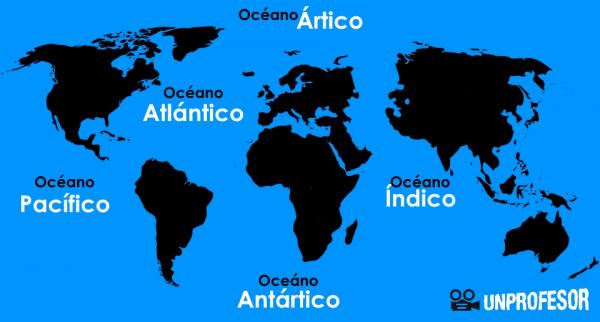
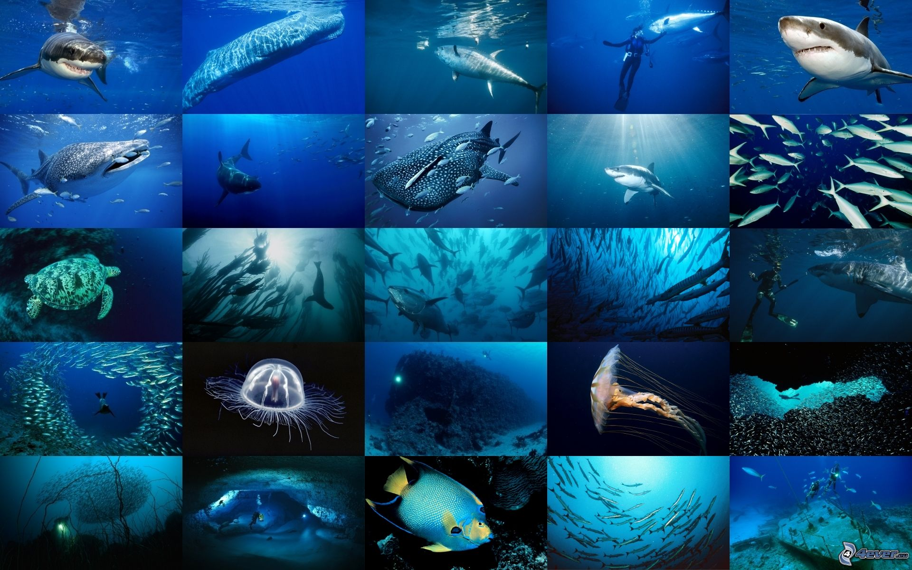
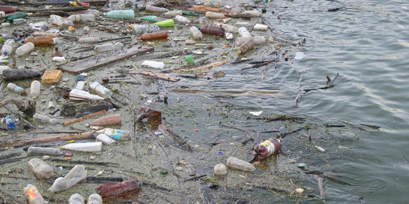
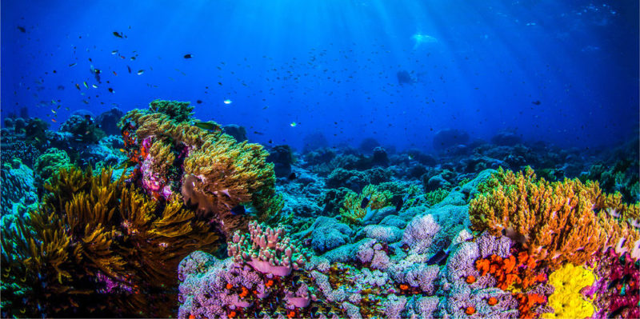
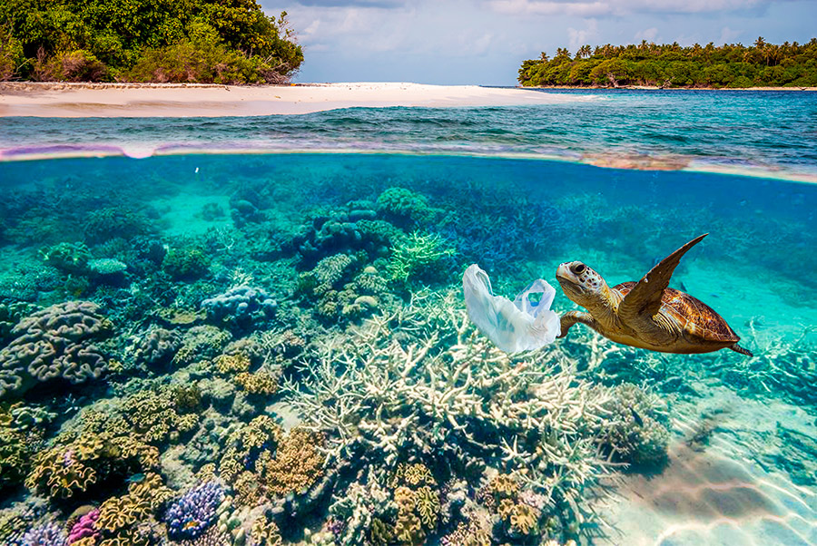

Los océanos del mundo, su temperatura, composición química, corrientes y vida son el motor de los sistemas globales que hacen que la Tierra sea un lugar habitable para los seres humanos. La forma en que gestionamos este recurso vital es fundamental para la humanidad y para contrarrestar los efectos del cambio climático.
Los medios de vida de más de 3.000 millones de personas dependen de la biodiversidad marina y costera. Sin embargo, el 30% de las poblaciones de peces del mundo está sobreexplotado, alcanzando un nivel muy por debajo del necesario para producir un rendimiento sostenible.
Los océanos también absorben alrededor del 30% del dióxido de carbón generado por las actividades humanas y se ha registrado un 26% de aumento en la acidificación de los mares desde el inicio de la revolución industrial. La contaminación marina, que proviene en su mayor parte de fuentes terrestres, ha llegado a niveles alarmantes: por cada kilómetro cuadrado de océano hay un promedio de 13.000 trozos de desechos plásticos.
2.Tabla con Cifras
Cifras
Información
Imagenes
75%
El océano cubre tres cuartas partes de la superficie de la Tierra y representa el 99% del espacio vital del planeta en volumen.

2000
El océano contiene casi 200.000 especies identificadas, pero las cifras reales pueden ser millones.

40%
Hasta un 40% del océano se ve muy afectado por la contaminación, las pesquerías agotadas, la pérdida de hábitats costeros y otras actividades humanas.

30%
El océano absorbe alrededor del 30% del dióxido de carbono producido por los humanos, amortiguando los impactos del calentamiento global.

3.000 Millones
Más de 3.000 millones de personas dependen de la biodiversidad marina y costera para su sustento.

US$ 3 Billones
A nivel global, el valor de mercado de los recursos e industrias marinas y costeras se estima en US $3 mil millones por año, alrededor del 5% del PIB mundial.
Los medios de vida de más de 3.000 millones de personas dependen de la biodiversidad marina y costera. Sin embargo, el 30 por ciento de las poblaciones de peces del mundo está sobreexplotado, alcanzando un nivel muy por debajo del necesario para producir un rendimiento sostenible.
Los océanos también absorben alrededor del 30 por ciento del dióxido de carbón generado por las actividades humanas y se ha registrado un 26 por ciento de aumento en la acidificación de los mares desde el inicio de la revolución industrial. La contaminación marina, que proviene en su mayor parte de fuentes terrestres, ha llegado a niveles alarmantes: por cada kilómetro cuadrado de océano hay un promedio de 13.000 trozos de desechos plásticos.
Los Objetivos de Desarrollo Sostenible generan un marco para ordenar y proteger de manera sostenible los ecosistemas marinos y costeros de la contaminación terrestre, así como para abordar los impactos de la acidificación de los océanos. Mejorar la conservación y el uso sostenible de los recursos oceánicos a través del derecho internacional también ayudará a mitigar algunos de los retos que enfrentan los océanos.
Metas del objetivo 14:
Para 2025, prevenir y reducir de manera significativa la contaminación marina de todo tipo, en particular la contaminación producida por actividades realizadas en tierra firme, incluidos los detritos marinos y la contaminación por nutrientes
Para 2020, gestionar y proteger de manera sostenible los ecosistemas marinos y costeros con miras a evitar efectos nocivos importantes, incluso mediante el fortalecimiento de su resiliencia, y adoptar medidas para restaurarlos con objeto de restablecer la salud y la productividad de los océanos
Reducir al mínimo los efectos de la acidificación de los océanos y hacerles frente, incluso mediante la intensificación de la cooperación científica a todos los niveles.
Reglamentar eficazmente la explotación pesquera y poner fin a la pesca excesiva, la pesca ilegal, la pesca no declarada y no reglamentada y las prácticas de pesca destructivas, y aplicar planes de gestión con fundamento científico a fin de restablecer las poblaciones de peces en el plazo más breve posible, por lo menos a niveles que puedan producir el máximo rendimiento sostenible de acuerdo con sus características biológicas.
Para 2030, aumentar los beneficios económicos que los pequeños Estados insulares en desarrollo y los países menos adelantados reciben del uso sostenible de los recursos marinos, en particular mediante la gestión sostenible de la pesca, la acuicultura y el turismo.
Aqui aparecera una fecha y hora al hacer click en el boton